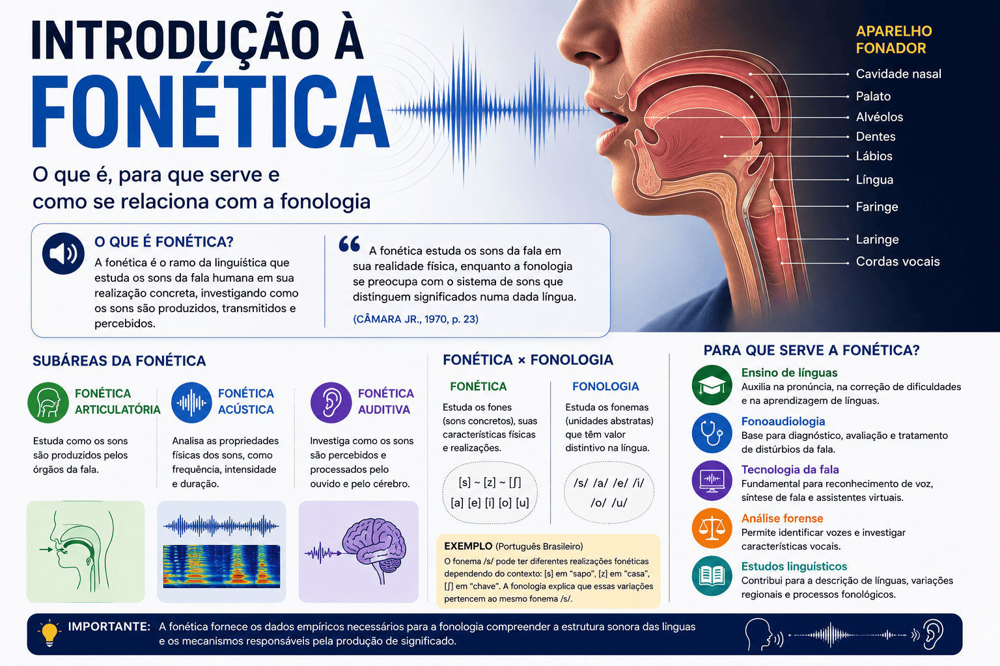

Introdução à Fonética: o que é, para que serve e como se relaciona com a fonologia
A linguagem verbal humana constitui um dos fenômenos biofísicos, cognitivos e culturais mais sofisticados investigados pela ciência contemporânea. Em sua dimensão primordial, a linguagem se manifesta pela fala: um contínuo articulatório e acústico gerado pela modulação do ar nos tratos respiratório e digestivo superiores. Antes de se organizar em sistemas de regras gramaticais abstratas ou convenções ortográficas, a comunicação oral existe como matéria física mensurável — movimentos musculares, atritos do fluxo aéreo, perturbações mecânicas da pressão atmosférica e impulsos neuroelétricos na via auditiva.
A Fonética é a disciplina científica da Linguística responsável por investigar os sons da linguagem humana em sua concreta materialidade empírica. Seu objeto de estudo elementar é o fone — o evento sonoro real produzido pelo aparelho fonador e captado pelo ouvido, independentemente de seu valor distintivo em uma dada língua histórica. Longe de constituir mera descrição mecânica de ruídos orais, a Fonética analisa com rigor metodológico a biomecânica da produção vocal, a física de propagação das ondas sonoras e a psicoacústica da percepção da fala.
Por transitar na fronteira entre a biologia, a física e a cognição, o conhecimento fonético atua como eixo estruturante de diversas esferas acadêmicas e profissionais. Ele subsidia a Linguística Descritiva e Teórica, a Fonoaudiologia Clínica, a Psicologia Cognitiva, a Fonética Forense (como em perícias de identificação de falantes), o ensino e aprendizagem de línguas maternas e estrangeiras e o desenvolvimento de Inteligências Artificiais no Processamento de Linguagem Natural (como no reconhecimento automático e na síntese de fala).
Neste artigo acadêmico, você explorará o estatuto epistemológico da Fonética, as especificidades de suas três grandes subáreas (Articulatória, Acústica e Auditiva), as diferenças conceituais definitivas entre fone, fonema e grafema, o funcionamento do Alfabeto Fonético Internacional (AFI/IPA), um roteiro sistemático para transcrição e análise fonética, além de exemplos empíricos comentados, questões resolvidas e sínteses teóricas.

O estatuto epistemológico e a materialidade da Fonética
A consolidação da Fonética moderna exigiu uma ruptura epistemológica fundamental: a separação definitiva entre a fala (fenômeno sonoro natural e universal da espécie humana) e a escrita (tecnologia cultural gráfica e secundária). Historicamente, a tradição gramatical normativa tendeu a confundir as letras com os sons que elas pretendem representar, gerando equívocos analíticos persistentes. Para a ciência da linguagem, os sons existem no tempo e no espaço físico, enquanto as letras são convenções arbitrárias registradas sobre suportes materiais.
Sob a perspectiva empírica, a Fonética investiga os eventos sonoros a partir de parâmetros universais compartilhados pela anatomia e pela fisiologia da espécie humana. Isso significa que, enquanto cada comunidade linguística desenvolve um repertório próprio de sons funcionais, a capacidade biológica e acústica do aparelho fonador para gerar sons é comum a todos os seres humanos, constituindo a substância universal sobre a qual as línguas constroem seus sistemas (CRYSTAL, 2010).
A materialidade física dos sons da fala
“A fonética estuda os sons da fala em sua realidade física, enquanto a fonologia se preocupa com o sistema de sons que distinguem significados numa dada língua. A primeira ocupa-se dos sons como fatos materiais; a segunda considera-os como elementos integrantes de um sistema linguístico” (CÂMARA JR., 1970, p. 23). O fone existe no plano concreto da substância da expressão, sendo passível de mensuração fisiológica, oscilográfica e espectrográfica.
A investigação fonética abrange três dimensões indissociáveis que ocorrem em sequência durante a cadeia de comunicação da fala (speech chain):
- Dimensão fisiológico-articulatória: coordenação neuromuscular e motora que mobiliza pulmões, laringe, faringe, língua, lábios e palato para moldar a corrente de ar e gerar ondas sonoras;
- Dimensão físico-acústica: perturbação mecânica transmitida pelas moléculas do ar através de variações de pressão, frequência, amplitude, periodicidade e ressonância;
- Dimensão neuroauditiva e perceptiva: captação do estímulo mecânico pelo pavilhão auricular, amplificação pelo ouvido médio, transdução eletroquímica na cóclea e decodificação sensorial no córtex cerebral auditivo.
As três grandes subáreas da Fonética
Para apreender a totalidade do fenômeno sonoro, a Fonética divide-se tradicionalmente em três ramos complementares, articulando métodos anatômicos, físicos e experimentais.
1. Fonética Articulatória (A biomecânica da produção vocal)
A Fonética Articulatória estuda como o corpo humano atua como um complexo instrumento aerodinâmico e acústico. A imensa maioria dos sons das línguas naturais, incluindo a totalidade dos sons do português brasileiro, é produzida por uma corrente aérea pulmonar egressiva — isto é, o ar é expelido dos pulmões sob pressão e sobe pelos brônquios e pela traqueia até encontrar as estruturas anatômicas modificadoras.
A produção articulatória estrutura-se em três etapas operacionais integradas:
- Iniciação (Pressão do ar): fornecida principalmente pelo diafragma e pela caixa torácica, que impelem o fluxo aéreo contínuo necessário à fonação;
- Fonação (Vibração laríngea): ocorre na laringe, onde se localizam as pregas vocais. Se as pregas vocais estiverem aduzidas (fechadas) com tensão adequada, a passagem do ar força sua vibração cíclica contínua, gerando sons sonoros (vozeados), como [b], [d], [v], [z] e todas as vogais orais. Se estiverem abduzidas (afastadas), o ar flui sem vibração, gerando sons surdos (desvozeados), como [p], [t], [f], [s];
- Articulação (Ressonância e modulação supraglótica): ao ingressar no trato vocal supraglótico (faringe, cavidade oral e cavidade nasal), a corrente de ar é alterada por articuladores ativos (língua, lábio inferior, véu palatino) que se movem em direção a articuladores passivos (dentes superiores, alvéolos, palato duro), gerando diferentes modos e pontos de articulação.
A complementaridade dos parâmetros articulatórios
“A descrição adequada das consoantes requer a observação concomitante do modo de articulação, do ponto de articulação e do estado das pregas vocais. Nas vogais, os parâmetros determinantes passam pela altura da língua, seu recuo ou avanço horizontal e a postura dos lábios” (CALLOU; LEITE, 2009, p. 46).
2. Fonética Acústica (A física do sinal de fala)
A Fonética Acústica analisa a onda sonora durante sua propagação no ar entre a boca do locutor e o ouvido do interlocutor. Utilizando ferramentas de análise computacional e espectrografia (como o software Praat), essa área decompõe o sinal contínuo da fala em ondas senoidais elementares por meio da Análise de Fourier.
Na física acústica da fala, destacam-se dois parâmetros vitais para o estudo das vogais e da identidade do locutor:
Primeiro Formante — F1 (Abertura da Boca)
O formante F1 corresponde à frequência de ressonância da cavidade posterior (faríngea). Está inversamente relacionado à altura da língua no trato oral: quanto mais baixa a língua e mais aberta a boca (como na vogal [a]), maior será o valor de F1 em Hertz (Hz); quanto mais alta a língua (como nas vogais [i] e [u]), menor será a frequência de F1.
Parâmetro correlato: Altura da língua e grau de abertura mandibular.
Segundo Formante — F2 (Anterioridade da Língua)
O formante F2 expressa a ressonância da cavidade oral anterior. Está diretamente relacionado à posição horizontal do corpo da língua: quanto mais avançada a língua em direção aos dentes (vogais anteriores como [i] e [e]), maior o F2; quanto mais recuada a língua em direção ao véu palatino (vogais posteriores como [u] e [o]), menor o F2.
Parâmetro correlato: Eixo horizontal (anterioridade / posterioridade) e arredondamento labial.
3. Fonética Auditiva e Perceptiva (A cognição sensorial)
A Fonética Auditiva investiga os mecanismos fisiológicos e neurológicos que operam na recepção sensorial dos sons. Quando as ondas de pressão atmosférica atingem a membrana timpânica, a vibração é transferida pelos ossículos (martelo, bigorna e estribo) até a janela oval da cóclea. Na cóclea, a onda hidráulica movimenta a membrana basilar, ativando as células ciliadas do Órgão de Corti, que convertem a energia mecânica em impulsos neurais enviados ao córtex auditivo pelo nervo vestibulococlear.
Já a Fonética Perceptiva investiga como a mente humana processa e categoriza esses impulsos. Ela explica fenômenos complexos como a percepção categórica (a capacidade do cérebro de agrupar variações físicas graduais em categorias sonoras discretas) e o Efeito McGurk (que demonstra a integração multimodal entre pistas visuais do movimento labial e o som percebido).
A Cadeia da Fala (Denes & Pinson, 1993)
- Nível linguístico-mental: formulação da mensagem e ativação dos comandos motores no cérebro do falante;
- Nível fisiológico do emissor: disparo neuromotor, contração muscular dos órgãos fonadores e produção de ondas de pressão;
- Nível físico-acústico: deslocamento oscilatório das partículas do meio condutor em frequências e amplitudes determinadas;
- Nível fisiológico do receptor: captação do estímulo mecânico pelo ouvido, transdução coclear e condução neural;
- Nível perceptivo-linguístico: decodificação dos padrões sonoros no córtex auditivo e integração semântica do enunciado.
Quadro comparativo das subáreas da Fonética
Para sistematizar a diversidade de focos de estudo, métodos empíricos e instrumental técnico empregados pela ciência fonética, o quadro a seguir sintetiza seus principais ramos:
| Subárea | Objeto Primordial | Instrumental e Métodos | Principais Parâmetros de Análise |
|---|---|---|---|
| Fonética Articulatória | Mecanismos fisiológicos e biomecânicos de produção dos sons. | Palatografia, ultrassonografia de língua, eletropalatografia, ressonância magnética (RM). | Ponto de articulação, modo de articulação, sonoridade/vozeamento, nasalidade e postura labial. |
| Fonética Acústica | Propriedades físicas do sinal sonoro durante a transmissão pelo ar. | Espectrografia computadorizada, oscilogramas, softwares de análise acústica (ex.: Praat). | Frequência fundamental (F0), formantes (F1, F2, F3), intensidade em decibéis (dB), duração temporal (ms) e espectro de ruído. |
| Fonética Auditiva e Perceptiva | Captação bioacústica do ouvido e decodificação perceptiva no cérebro. | Audiometria vocal, experimentos perceptivos de discriminação, eletroencefalografia (EEG/ERP), testes psicoacústicos. | Limiar de audibilidade, altura subjetiva (pitch), intensidade perceptiva (loudness), timbre e percepção categórica. |
| Fonética Forense (Aplicada) | Investigação pericial da voz e do perfil de fala para fins judiciais. | Análise acústico-comparativa de locutores, biometria de voz, transcrição estrita de gravações ruidosas. | Padrões prosódicos individuais, formantes da cavidade nasal, disfluências, taxa de elocução e frequência média do locutor. |
Diferença crucial: Fonética vs. Fonologia
Uma das distinções conceituais mais importantes da Linguística teórica reside na oposição entre Fonética e Fonologia. Ambas debruçam-se sobre a matéria sonora da linguagem humana, contudo, partem de níveis de abstração e interesses teóricos radicalmente diversos, correspondendo à clássica oposição entre a substância da expressão e a forma da expressão postulada por Ferdinand de Saussure e Louis Hjelmslev:
Fonética (O Fone e a Matéria)
Dedica-se aos fones, que são os sons reais, físicos e observáveis da fala. Não se preocupa em saber se uma mudança de som altera o significado de uma palavra. Os fones são grafados obrigatoriamente entre colchetes [ ].
Pergunta central: Como este som é articulado pelos órgãos da fala, qual sua frequência em Hertz e como ele é percebido pelo ouvido?
Fonologia (O Fonema e a Função)
Dedica-se aos fonemas, que são representações mentais abstratas dos sons capazes de estabelecer oposição de significados dentro de um sistema linguístico. Os fonemas são grafados obrigatoriamente entre barras inclinadas / /.
Pergunta central: A substituição deste som por outro cria uma nova palavra no léxico da língua? Qual é o valor distintivo desse elemento no sistema?
Para ilustrar com clareza essa fronteira, considere a consoante dental /t/ no português brasileiro. Em regiões como São Paulo, Rio de Janeiro e Belo Horizonte, quando o fonema /t/ ocorre diante da vogal alta anterior [i], sua realização física deixa de ser a oclusiva pura [t] e passa a ser a africada pós-alveolar [tʃ], como em tique [ˈtʃiki] ou tia [ˈtʃi.ɐ]. Por outro lado, em grande parte do Nordeste e no Sul, pronuncia-se a oclusiva pura [ˈti.ɐ].
Sob o ponto de vista estritamente fonético, os sons [t] e [tʃ] são completamente diferentes em ponto e modo de articulação, além de exibirem espectrogramas inconfundíveis (o primeiro tem barra de soltura limpa; o segundo exibe uma prolongada esteira de ruído turbulento). Todavia, sob o ponto de vista fonológico do português brasileiro, [t] e [tʃ] não são fonemas diferentes, mas sim alófones (variantes físicas) de um único e mesmo fonema /t/, pois a troca de uma realização pela outra não cria uma palavra diferente, apenas sinaliza a procedência regional ou o estilo do falante (CRISTÓFARO-SILVA, 2003).
A armadilha da confusão entre letra, fone e fonema
A escrita ortográfica é um sistema histórico de convenções gráficas (grafemas), e não uma transcrição espelhada da fala. Jamais confunda letras com fonemas ou fones! Uma única letra pode representar múltiplos fonemas (a letra x representa /ʃ/ em xícara, /z/ em exame, /s/ em texto e /ks/ em táxi); um mesmo fonema pode ser grafado por múltiplas letras (o fonema /s/ aparece com s em sapo, c em cidade, ç em aço e sc em nascer); e há letras que não representam fone algum no português atual, como o h mudo em hoje.
O Alfabeto Fonético Internacional (AFI/IPA) e a transcrição fonética
Como as ortografias das línguas históricas são repletas de irregularidades, ambiguidades e defasagens cronológicas em relação à pronúncia viva, a Linguística não pode usar o alfabeto convencional para registrar a fala com rigor científico. Em resposta a essa limitação, a Associação Fonética Internacional concebeu o Alfabeto Fonético Internacional (AFI, ou IPA na sigla em inglês), publicado inicialmente em 1888 e constantemente atualizado (INTERNATIONAL PHONETIC ASSOCIATION, 1999).
O princípio reitor do IPA é estrito e rigoroso: a cada símbolo gráfico deve corresponder um único som elementar distintivo, e a cada som deve corresponder um único símbolo internacional, independentemente de qual língua esteja sendo analisada. Assim, a transcrição fonética permite que um linguista em qualquer parte do planeta reproduza com precisão a pronúncia exata de uma língua ou dialeto que ele nunca ouviu previamente.
A transcrição fonética classifica-se metodologicamente em duas modalidades:
- Transcrição Fonética Ampla (Larga): registra apenas as propriedades sonoras essenciais e mais proeminentes do enunciado, sem adentrar em microvariações de tempo de soltura, graus milimétricos de abertura ou ressonâncias periféricas. Grafada comumente entre colchetes, fornece uma representação funcional simplificada da fala;
- Transcrição Fonética Estrita (Estreita): registra com nível exaustivo de fidelidade empírica todos os detalhes articulatórios, coarticulatórios e alofônicos da elocução real. Utiliza profusão de sinais diacríticos normalizados do IPA para indicar nasalização secundária [ ̃ ], aspiração [ ʰ ], velarização [ ˠ ], labialização [ ʷ ], dentificação [ ̪ ] e duração prolongada [ ː ].
Roteiro metodológico: como realizar uma análise fonética
A condução de investigações científicas em Fonética exige procedimentos laboratoriais e computacionais padronizados, garantindo que os dados orais analisados sejam reproduzíveis e livres de artefatos mecânicos. O esquema a seguir orienta as etapas de uma pesquisa fonética empírica:
Etapas do roteiro analítico em Fonética
- Constituição do corpus e gravação controlada: definição dos sujeitos, seleção de listas de palavras balanceadas ou amostras de fala espontânea, e gravação em cabine acústica com microfone unidirecional calibrado a 44.100 Hz ou 48.000 Hz / 16 bits;
- Segmentação do sinal sonoro: importação dos arquivos de áudio (.wav não comprimido) para estações de análise acústica (ex.: software Praat) e corte preciso das fronteiras acústicas entre fones a partir da visualização simultânea de oscilograma e espectrograma;
- Extração e mensuração paramétrica: medição objetiva da frequência fundamental (F0), dos valores centrais de F1, F2 e F3 das vogais em regime estável (geralmente nos 50% centrais do segmento), da duração absoluta em milissegundos e do Voice Onset Time (VOT) das oclusivas;
- Normalização e análise estatística: aplicação de algoritmos de normalização acústica (como Lobanov ou Nearey) para anular discrepâncias decorrentes das dimensões anatômicas individuais do trato vocal de homens, mulheres e crianças;
- Transcrição e classificação articulatória: formalização dos fones observados no sistema do IPA, acompanhados de seus respectivos diacríticos coarticulatórios;
- Interpretação e correlação sociolinguística/cognitiva: cotejamento dos achados com variáveis contextuais, dialetais, diacrônicas, fonoaudiológicas ou aplicadas.
Exemplo de análise acadêmica: o fenômeno da africação no PB
Situação em análise
Dois falantes nativos do português brasileiro pronunciam a mesma oração declarativa em seus respectivos falares regionais: "O garoto pediu um tíquete na bilheteria do teatro."
Locutor A (Natural de Curitiba - PR): pronuncia a sílaba tônica inicial de tíquete com a oclusiva dentoalveolar surda [ˈtiketi].
Locutor B (Natural de Belo Horizonte - MG): pronuncia a mesma palavra com a africada pós-alveolar surda [ˈtʃiketʃi].
Análise articulatória e acústica
No Locutor A, o ápice da língua faz um contato oclusivo firme com os alvéolos e a face interna dos dentes superiores, gerando um bloqueio completo e momentâneo do ar, seguido de uma soltura abrupta (burst) de curtíssima duração (menos de 15 milissegundos) antes do início da periodicidade da vogal [i].
No Locutor B, o corpo da língua se antecipa à vogal alta anterior [i] (processo conhecido como assimilação coarticulatória por palatalização). O contato oclusivo inicial com a região pós-alveolar não é liberado abruptamente, mas seguido imediatamente por um estreitamento turbulento onde o ar escapa gerando atrito sonoro concentrado em altas frequências (acima de 3.000 Hz). Acusticamente, isso se manifesta no espectrograma como uma barra de oclusão seguida por uma longa esteira de ruído fricativo de cerca de 70 a 100 milissegundos.
Relação com o sistema da língua (Fonética vs. Fonologia)
Embora a diferença biomecânica e o espectro acústico sejam manifestamente contrastantes, nenhum ouvinte brasileiro interpreta tíquete com [t] e tíquete com [tʃ] como termos de significados distintos. O evento comprova empiricamente que, no português brasileiro, a africação é um processo estritamente fonético (alofônico), condicionado pela fisiologia do contato entre a ponta da língua e a vogal alta anterior, confirmando a autonomia e o valor explicativo da Fonética ao lado da Fonologia.
Questões para estudo e reflexão
Questão 1
Por que a Linguística científica afirma que os conceitos de fone, fonema e grafema pertencem a domínios epistemológicos distintos? Explique a natureza de cada um.
Ver resposta comentada
Resposta comentada: O fone pertence ao domínio da Fonética: é a manifestação física, fisiológica e mensurável do som da fala humana, grafado entre colchetes [ ]. O fonema pertence à Fonologia: é a unidade mental abstrata e distintiva que integra o sistema sonoro de uma língua particular, cuja substituição altera o significado lexical, grafado entre barras / /. O grafema, por sua vez, pertence à convenção gráfica da escrita: é o símbolo ortográfico visual (letra ou conjunto de letras) adotado historicamente pela sociedade para representar unidades sonoras no papel ou na tela, inexistindo relação biunívoca perfeita entre fonemas e grafemas na maioria das línguas naturais.
Questão 2
Na análise acústica das vogais, quais são os dois principais parâmetros correlacionados aos valores das frequências dos formantes F1 e F2?
Ver resposta comentada
Resposta comentada: O formante F1 está inversamente correlacionado à altura da língua no trato vocal (grau de abertura da boca): quanto mais baixa a língua e mais aberta a mandíbula (como na vogal baixa [a]), maior a frequência de F1; quanto mais alta a língua (como nas vogais altas [i] e [u]), menor a frequência de F1. Já o formante F2 correlaciona-se com a posição horizontal do corpo da língua (anterioridade versus posterioridade): quanto mais avançada a língua em direção aos dentes (vogais anteriores como [i]), maior é a frequência de F2; quanto mais recuada em direção à faringe e ao véu palatino (vogais posteriores como [u]), menor será a frequência de F2, parâmetro que também é reduzido pelo arredondamento e projeção dos lábios.
Questão 3
Qual é a função do Alfabeto Fonético Internacional (AFI/IPA) e por que ele é indispensável para o trabalho de transcrição linguística?
Ver resposta comentada
Resposta comentada: O AFI/IPA fornece um sistema de símbolos normalizado e universal em que vigora uma relação biunívoca entre o símbolo gráfico e a propriedade fonética que ele registra. Como os sistemas ortográficos das línguas naturais são inconsistentes, cheios de letras com múltiplos sons, letras mudas e variações históricas, o IPA é indispensável para registrar objetivamente e sem ambiguidades a pronúncia real de qualquer fala humana, permitindo a comparação interlinguística, a documentação de línguas ameaçadas e a pesquisa laboratorial.
Questão 4
O que caracteriza um par mínimo e qual é o seu papel para demonstrar o limite entre a análise fonética e a fonológica?
Ver resposta comentada
Resposta comentada: Um par mínimo consiste em duas palavras distintas de uma língua que se diferenciam no significado apenas por um único som posicionado no mesmo ambiente fonotático (ex.: pato /ˈpatu/ e bato /ˈbatu/). O teste de comutação do par mínimo demonstra que a oposição fônica entre a oclusiva surda [p] e a sonora [b] tem valor distintivo, provando que /p/ e /b/ são fonemas independentes no sistema fonológico do português. Quando a troca de sons não gera um par mínimo nem altera o significado (como entre [ˈti.u] e [ˈtʃi.u] para tio), tem-se uma variação meramente alofônica/fonética.
Questão 5
De que maneira os avanços da Fonética Acústica e Articulatória viabilizam o funcionamento de tecnologias como assistentes virtuais de voz e reconhecimento automático de fala (ASR)?
Ver resposta comentada
Resposta comentada: Sistemas de IA como os de Reconhecimento Automático de Fala (ASR) e Text-to-Speech (TTS) dependem da modelagem matemática de propriedades fonéticas. Os modelos de reconhecimento decompõem o sinal acústico digitalizado em espectros de frequência, identificando formantes, durações, transições e esteiras de ruído para associá-los a probabilidades de fones e sequências de palavras. Da mesma forma, na síntese de voz, a fonética articulatória e acústica orienta a geração paramétrica de entonações, pausas e coarticulações naturais, evitando que a voz sintética soe robótica.
Resumo da Introdução à Fonética
- A Fonética investiga os sons da fala humana (fones) em sua concreta materialidade biofísica, acústica e fisiológica;
- Subdivide-se em três ramos complementares: Articulatória (biomecânica da produção), Acústica (propriedades da onda) e Auditiva/Perceptiva (recepção biológica e cognitiva);
- Distingue-se categoricamente da Fonologia, visto que a Fonética estuda a substância concreta dos sons [fones], enquanto a Fonologia analisa a função mental distintiva das unidades no sistema da língua /fonemas/;
- A produção dos sons no português utiliza uma corrente aérea pulmonar egressiva modificada na laringe (pregas vocais) e nas cavidades supraglóticas;
- A Fonética Acústica permite mapear as vogais no espaço acústico por meio dos formantes: F1 associado à abertura da boca/altura da língua e F2 associado ao recuo/avanço horizontal;
- O Alfabeto Fonético Internacional (AFI/IPA) estabelece um código de transcrição unívoco e universal para representar a produção sonora de qualquer idioma sem as distorções da ortografia;
- A transcrição fonética classifica-se em ampla (centrada em contrastes gerais) e estrita (com diacríticos exaustivos para detalhar a alofonia e a coarticulação);
- Aplica-se estrategicamente na Fonoaudiologia clínica, na perícia de Fonética Forense, no ensino de pronúncia em línguas e no desenvolvimento de inteligências artificiais de processamento de fala.
Perguntas frequentes sobre Fonética
O que estuda exatamente a Fonética?
A Fonética estuda a matéria física dos sons da fala humana, investigando os processos anatômicos e fisiológicos envolvidos na sua produção pelo aparelho fonador, as propriedades físicas das ondas acústicas durante sua propagação pelo meio material e os mecanismos neurosensoriais responsáveis pela sua audição e percepção pelo sistema auditivo.
Qual é a diferença fundamental entre Fonética e Fonologia?
A Fonética analisa os sons em sua realidade física e universal (o fone, grafado entre colchetes [ ]), verificando como ele é articulado e transmitido independentemente de significado. A Fonologia analisa o valor distintivo e funcional dos sons dentro de uma língua específica (o fonema, grafado entre barras / /), identificando quais contrastes sonoros são capazes de mudar o significado das palavras.
Por que uma letra não é a mesma coisa que um fonema ou fone?
Porque a letra (grafema) é apenas um símbolo visual da escrita, fruto de convenções históricas e culturais arbitrárias. Na fala viva, um único fonema pode ser grafado por várias letras diferentes (como o som /s/ em sapo, centro, caçador, descer), uma única letra pode soar como diferentes fones (a letra x em xícara, exame, próximo), e certas letras não têm realização sonora alguma (como o h de homem).
O que são formantes na Fonética Acústica?
Formantes são faixas de concentração de energia acústica amplificadas pelas ressonâncias do trato vocal supraglótico. Cada configuração da boca, da língua e da faringe cria frequências de ressonância características (denominadas F1, F2, F3, etc.), permitindo que o ouvido humano e os computadores identifiquem acusticamente qual vogal está sendo pronunciada.
O que significa dizer que um som é sonoro (vozeado) ou surdo (desvozeado)?
Essa classificação refere-se à atividade das pregas vocais na laringe. Quando o ar passa pelas pregas vocais aproximadas e as faz vibrar intensamente, produz-se um som sonoro ou vozeado (como em [b], [d], [g], [v], [z], [m]). Quando as pregas vocais permanecem abertas e o ar passa sem vibrá-las, produz-se um som surdo ou desvozeado (como em [p], [t], [k], [f], [s]).
O que é o Alfabeto Fonético Internacional (AFI/IPA)?
É um sistema padronizado de escrita fonética desenvolvido pela Associação Fonética Internacional. Ele associa um símbolo exclusivo e constante para cada som articulatório humano existente no mundo, permitindo que pesquisadores transcrevam a pronúncia exata de qualquer língua sem depender das incoerências ortográficas locais.
O que é um alófone?
Um alófone é uma realização física variante de um fonema que não provoca alteração de significado. No português do Brasil, a pronúncia de dia com a oclusiva pura [d] ou com a africada [dʒ] são realizações alofônicas do fonema /d/ associadas a diferentes dialetos regionais ou registros de fala.
Como o estudo da Fonética auxilia na Fonoaudiologia e na Medicina?
A Fonética fornece o instrumental teórico e descritivo para diagnosticar dislalias, atrasos de aquisição de fala, fendas palatinas, alterações nos movimentos dos articuladores e distúrbios da voz. Além disso, a análise acústica laboratorial permite mensurar objetivamente a evolução terapêutica de pacientes antes e depois de procedimentos cirúrgicos ou de reabilitação fonoaudiológica.
Considerações finais
A Fonética estabelece-se como o alicerce empírico indispensável de toda a ciência linguística e das tecnologias modernas aplicadas à comunicação humana. Ao desvendar os mecanismos fisiológicos, os princípios aerodinâmicos e os padrões acústicos que convertem o pensamento em som audível, a disciplina resgata a corporeidade e a complexidade biomecânica que sustentam a faculdade da fala.
Dominar os fundamentos da Fonética — desde a mecânica dos articuladores do aparelho fonador até o cálculo dos formantes acústicos e as regras de correspondência do Alfabeto Fonético Internacional — proporciona a estudantes, professores, fonoaudiólogos e pesquisadores a clareza teórica necessária para analisar cientificamente os dialetos do português, intervir com rigor em patologias da fala e conceber inovações de ponta em sistemas de processamento de voz.
Conteúdos relacionados
- Classificação dos Sons da Fala: consoantes e vogais na Fonética e na Fonologia
- Classificação Fonética Detalhada das Vogais
- Relação entre Fonema e Grafema na Língua Portuguesa
- Os órgãos da fala e a produção dos sons da linguagem humana
- Fonética Articulatória no Português: funcionamento e exemplos práticos
- Fonética e Estudo dos Sons da Fala — Índice de Conteúdos
Referências
- CALLOU, Dinah; LEITE, Yonne. Iniciação à Fonética e à Fonologia. 11. ed. Rio de Janeiro: Jorge Zahar, 2009.
- CÂMARA JR., Joaquim Mattoso. Princípios de linguística geral. 4. ed. Rio de Janeiro: Acadêmica, 1970.
- CÂMARA JR., Joaquim Mattoso. Estrutura da Língua Portuguesa. 46. ed. Petrópolis: Vozes, 2011.
- CRISTÓFARO-SILVA, Thaïs. Fonética e fonologia do português: roteiro de estudos e guia de exercícios. 8. ed. São Paulo: Contexto, 2003.
- CRYSTAL, David. Dicionário de linguística e fonética. Tradução de Celso Pedro Luft. Rio de Janeiro: Zahar, 2010.
- DENES, Peter B.; PINSON, Elliot N. The Speech Chain: the physics and biology of spoken language. 2. ed. New York: W. H. Freeman and Company, 1993.
- INTERNATIONAL PHONETIC ASSOCIATION. Handbook of the International Phonetic Association: a guide to the use of the International Phonetic Alphabet. Cambridge: Cambridge University Press, 1999.
- KENT, Ray D.; READ, Charles. The acoustic analysis of speech. 3. ed. San Diego: Singular Publishing Group, 2015.
- LADEFOGED, Peter. A Course in Phonetics. 5. ed. Boston: Thomson Wadsworth, 2006.
- SEARA, Izabel Christine; NUNES, Vanessa Gonzaga; LAZZAROTTO-VOLCÃO, Cristiane. Para conhecer Fonética e Fonologia do Português. São Paulo: Contexto, 2011.
Explore Outros Conteúdos
Continue seus estudos acessando outras seções do site Mestre Kira: